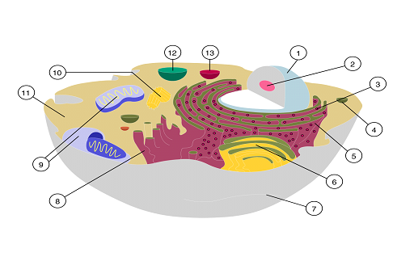

Definícia Bunky 1.1
Bunka je základnou stavebnou aj funkčnou jednotkou živého organizmu.
⦁Jej štruktúra sa dá rozpoznať svetelným mikroskopom
⦁ale elektrónový mikroskop umožňuje detailné pozorovanie bunkovej štruktúry na molekulovej úrovni.
⦁Bunky majú rozličnú funkciu, špecializujú sa.
⦁Životnosť buniek je rôzne dlhá a sú rôzne citlivé na nedostatok živín a kyslíka.
Bunka má
⦁ vonkajší obal (bunkovú, cytoplazmatickú membránu)
⦁ cytoplazmu (vnútrobunkovú tekutinu s cytoskeletom) a
⦁ bunkové organely.
Medzi bunkami je medzibunková hmota, ktorá obsahuje živiny, kyslík, splodiny metabolizmu a CO2.
Tieto látky prechádzajú do bunky a z bunky cez medzibunkovú hmotu smerom ku cievam.
Bunky tvoria tkanivá a orgány. Bunky majú rozličnú funkciu a špecializujú sa podľa lokalizácie v orgáne a jeho systéme.
Je to dané genetickou výbavou bunky uloženou v DNA (deoxyribonukleovej kyseline) vchromozómoch jadra bunky.
DNA je dvojzávitnica zložená znukleových kyselín.
Bunkové jadro alebo nukleus
⦁je organela
⦁ ktorá je geneticko-informačnou „centrálou“ eukaryotických buniek.
Bunkové jadro
obsahuje hlavnú časť genetickej informácie bunky potrebnej pre:
⦁ procesy rastu
⦁látkovej výmeny
⦁vývinu.
⦁ Tieto informácie sú uložené v chromatíne resp. chromozómoch v podobe DNA.
Lyzozómy:
⦁sú sférické organely s jednoduchou membránou
⦁ ktoré vznikajú v Golgiho aparáte
⦁Obsahujú enzýmy kyslých hydroláz.
Slúžia na:
odbúravanie endogénneho a exogénneho materiálu v bunkách a bunkových štruktúrach, ktoré stratili funkčnosť.
⦁ Tento jav sa označuje ako autofágia.
Mitochondria alebo chondriozóm
⦁ je organela, ktorá je obalená dvojitou membránou
⦁ ktorá má vlastnú genetickú sústavu (tzv. semiautonómna organela)
⦁ a ktorá sa vo veľkom množstve (stovky až tisíce) vyskytuje v cytoplazme eukaryotických buniek.
⦁ Slúži prevažne na získavanie energie tzv. bunkovým dýchaním (aeróbnou oxidáciou)
Protoplazma:
⦁je živá hmota bunky.
Delí sa na:
⦁karyoplazma (jadrová plazma) - plazma v jadre
⦁cytoplazma - plazma mimo jadra
Cytoplazmatická membrána:
⦁je druh biologickej membrány.
⦁ Je to 6-10 nm tenká vrstva
⦁ohraničujúca živý obsah buniek a tvoriaca hranicu medzi bunkou a jej okolím
⦁zároveň zabezpečujúca kontakt s vonkajším prostredím
Organely živočíšnej bunky a ich funkcia 1.2
Cytoplazmatická membrána
⦁ Bunka má na svojom povrchu cytoplazmatickú (bunkovú) membránu
skladá sa:
⦁z molekúl tukov a bielkovín
⦁Niektoré bielkoviny majú funkciu receptorov schopných prijímať informácie z vonkajšieho prostredia a realizovať aktívny transport (prenos) určitých látok, pričom membrána ochraňuje samotnú bunku pred cudzorodými látkami a mikroorganizmami.
⦁Je aj pasívne priepustná pre niektoré k životu potrebné látky. Presun látok je pasívny (difúzia) alebo aktívny (napr. fagocytóza, pinocytóza.. ).
⦁Na povrchu niektorých buniek sú aj riasinky, pôsobiace ako kefkový lem so schopnosťou odstraňovať z dutých orgánov škodlivé látky ich posúvaním pomocou riasiniek smerom von, napríklad v dýchacích cestách, alebo v pohlavnom systémeaj posúvať vajíčko vo vajíčkovode do maternice.
Cytoplazma
⦁Cytoplazma vypĺňa priestor ohraničený bunkovým obalom (cytoplazmatickou membránou)
⦁ nachádzajú sa v nej „pevne uložené“ bunkové organely.
⦁Obsahuje tekutinovú výplň (obsahujúcu anorganické a organické látky, vrátane enzýmov) a mikrotrabekuly.
⦁mikrotrabekuly sú molekuly bielkovín usporiadané do vláken a tvoria sieť, ktorá zabezpečí stabilný tvar bunky, jej prípadný pohyb a aj transport látok vnútri bunky.
Bunkové organely
- ⦁ jadro
- ⦁ jadierko
- ⦁ Golgiho aparát,
- ⦁ endoplazmatické retikulum
- ⦁ ribozómy
- ⦁ mitochodrie
- ⦁ lyzozómy
- ⦁ centriol.
Jadro a Jadierko
⦁Jadro je základnou bunkovou organelou, umožňujúcou bunke deliť sa.
⦁ Obsahuje chromozómy, ktoré nesú genetické informácie v DNA (deoxyribonukleová kyselina, dvojzávitnica).
⦁Sex-chromozóm (pohlavný chromozóm) určuje pohlavie (X,Y) jedinca a je prítomný v každej telovej bunke.
⦁Telové (somatické) bunky majú diploidný (dvojnásobný) počet chromozómov, to známená dvadsaťtri párov, celkovo 46 chromozómov.
⦁Posledný pár chromozómov sú pohlavné chromozómy. Pohlavné bunky (vajíčka u ženy, spermie u muža) majú haploidný (polovičný) počet chromozómov (23 chromozómov).
⦁ Niektoré bunky, napríklad erytrocyty a trombocyty, nemajú jadro.
⦁ V jadre sa nachádza jadierko. Jadierko obsahuje ribozómovú RNA (ribonukleová kyselina, jednozávitnica nukleových kyselín), potrebnú na tvorbu potrebných bielkovín pre bunku.
⦁ Ribozómová RNA (rRNA) prechádza do cytoplazmy a je súčasťou ribozómov.

Jadro s chromozómami:na obrázku je bunka (1) s jadrom (2) obsahujúcim 23 párov chromozómov. Chromozóm (3) je tvorený génmi, pričom gény pozostávajú z DNA (4)
Stavba deoxyribonukleovej kyseliny, zloženej zo skeletu (cukor a fosfát) a párov dusíkatých báz: 1 - skelet zložený z pentázy a fosfátu, 2 - dusíkaté bázy, 3 - páry dusíkatých báz: adenín-tymín, cytozín-guanín
Normálny karyotyp človeka: 23 párov chromozómov jadra telovej bunky, v ktorom je 22 párov autozómov a posledný, 23. pár tvoria gonozómy, odlišujúce pohlavie jedinca
Golgiho aparát
Golgiho aparát (komplex) je zhluk pospájaných vačkov, kde sa dotvárajú (syntetizujú) bielkoviny pre bunku. Nemá na sebe ribozómy.
Endoplazmatické retikulum
⦁Endoplazmatické retikulum predstavuje sieť prepojených kanálikov a vačkov .
⦁Slúžia na transport látok.
⦁Drsné endoplazmatické retikulum nesie na sebe ribozómy, aby sa vzniknuté bielkoviny dopravili na dokončenie ich tvorby do Golgiho komplexu (aparátu).
⦁ Hladké endoplazmatické retikulum sa podieľa na tvorbe tukov a cukrov pre bunku.
Ribozómy
⦁Ribozómová RNA (rRNA) prechádza z jadierka do cytoplazmy.
⦁ Tvorí ribozómy, kde prebieha syntéza (tvorba) bielkovín potrebných pre bunku.
⦁ Bielkoviny sú súčasťou enzýmov, štruktúr organel a aj bunkovej steny Bielkoviny sa skladajú z aminokyselín, ktoré transportuje (prenáša) ku ribozómom transportná RNA (tRNA).
⦁Mediátorová RNA (mRNA) „opíše recept“ na tvorbu bielkovín z DNA v jadre a napojí sa na ribozómy.
⦁ V ribozómoch sa uskutočňuje tvorba len určitých bielkovín v určitej bunke pre ňu potrebných.
Ribozómy a tvorba bielkovín.
Základom pre tvorbu bielkovín je DNA v jadre, jej transkripciou (prepisom, 1) sa utvorí ribozómová RNA (2). rRNA sa presunie do cytoplazmy bunky, tvorí ribozómy (5) a transláciou (prekladom, 4) sa tvoria bielkoviny(6,7) na ribozómoch (5).
Mitochondrie
Mitochondrie sú organelami určenými na výrobu energie potrebnej pre bunku. Realizuje sa v nich vnútorné dýchanie bunky. Majú dve membrány, povrchovú (hladkú) a vnútornú (zvlnenú), aby mali zväčšenú vnútornú plochu. Tam sa dejú oxidačné procesy v bunke. Mitochondrie obsahujú enzýmy potrebné pri týchto procesoch.
Štruktúra bunky: 1 - jadierko, 2 - jadro, 3 - drsné endoplazmatické retikulum, 4 - vezikula, 5- drsné endoplazmatické retikulum s ribozómami, 6 - Golgiho aparát, 7 - obal bunky (cytoplazmatická membrána s cytoskeletonom, 8 - hladké endoplazmatické retikulum, 9 - mitochondrie, 10 - vakuola, 11 - cytoplazma, 12 - lyzozóm, 13 - centriol
Lyzozómy
Lyzozómy obsahujú enzýmy potrebné na lýzu (rozklad, štiepenie) cudzorodých látok a mikroorganizmov (baktérie). Sú súčasťou imunitných mechanizmov bunky, slúžia na jej ochranu a obranu. Ak lyzozómy prasknú, enzýmy rozložia vlastnú bunku.
Centrioly
Centrioly sú organely potrebné na delenie bunky.